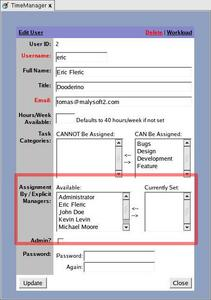

User profiles (accounts) are managed via the Administration Console. You can also access your profile from the main menu at any time. From the Administration Console, you can manage only those you were granted to via groups or explicit memberships (via the site administrator). User accounts are used by individuals, containing information such as their full name, job title, email, hours per week available, site admin access and explicit managers. No changes take effect until 'Add' or 'Save' is clicked on.
- Accessing your profile
- Accessing your team's profiles
- Hours/Week Available
- Assignment By / Explicit Managers
- Site Administrator
- Password
-
Workload Comparison
See Also:
- Task Categories
- Deleting Users
- Accessing your profile:
- Accessing your team's profiles:
- Email:
- Hours/Week Available:
- Assignment By / Explicit Managers:
- Site Administrator:
- Password:
- Workload Comparison:
- Task Categories:
- Deleting Users:
You can access your profile at any time by clicking on your name in the main menu.


By going to the Administration Console (via the 'Admin' menu tab), you can get a list of which users you are allowed to manage and see. Simply click on a user's name in order to get to their profile.

The email specified is used when major notification occur, such as when a task closes or gets assigned.
The hours per week available specify the threshold as used with the workload comparison module to determine at what point the user is 'overworked'. It defaults to 40 hours per week if not set to some other value.
The 'explicit managers' section defines a list (on the right-hand side) as to who can assign tasks to this particular user without being their group manager. They are added via highlighting the member in the left-hand list and clicking on the right arrow, and removed by highlighting a member in the right-hand list and clicking on the left arrow.
The 'Admin' checkbox specifies whether the user is a site administrator or not. This provides complete access to add, edit and remove tasks, projects and milestones, with no regard to an organizational chart. This access should only be given to a few people if any, such as IT help desk personnel.
The password for this user to log in is specified twice upon creation. If the password needs to be changed, type it in twice. Leaving the fields blank means that the password keeps the value it has now, and will not get erased.
By selecting users in the checkboxes and then clicking on 'View/Compare Workload', or by clicking on 'Workload' in a user's edit screen, one can get a list of what their workloads look like versus each other, and over time.

The right-hand list displays what task categories (from the person's groups) that they can/should handle. Clicking on something on the right-hand list and then the left arrow will remove it from their 'abilities' list. Moving something from the left list to the right list adds it back.